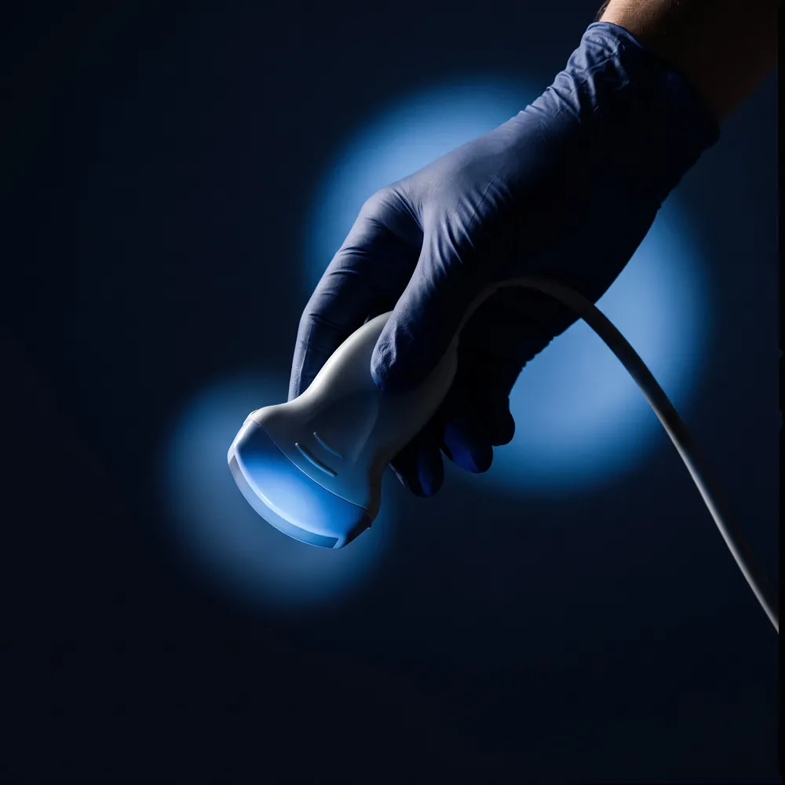

La santé des femmes, à chaque étape.
Échographie, grossesse, gynécologie, depuis 2012
Prendre rendez-vous
En ligne, par téléphone ou à l'accueil de votre centre. Les gynécologues et les sages-femmes sont salariés du centre ; vous êtes reçue en tiers payant, sans avance de frais sur la part remboursée.
- Tiers payantsans avance de frais sur la part remboursée
- Sur placeéchographie au sein du centre
- Salariéesgynécologues et sages-femmes du centre
- 5 j / 7centres ouverts cinq jours sur sept
Une histoire roannaise
En 2012, l'échographiste de grossesse de Roanne part à la retraite. Plutôt que de laisser l'échographie obstétricale disparaître du bassin, des soignants créent le Centre de santé du Marais : une association, des professionnels salariés, le tiers payant pour toutes.
Le pôle santé de la femme s'est ensuite étendu à d'autres villes, sous le nom du Marais ou sous un nom local : Gynécéa en Savoie, Millésime dans le Rhône, et en projet à Loos avec le CHU de Lille.

Nous expliquons, vous décidez
Le respect du corps et du choix des femmes guide chaque consultation : une information claire, le temps de poser vos questions, un consentement réellement éclairé avant chaque examen.
Voir les soinsLes soins
L'offre varie d'un centre à l'autre [à confirmer site par site].
- Échographie
Obstétricale et gynécologique
Échographies de grossesse et échographies pelviennes, réalisées au centre.
- Grossesse
Suivi et périnatalité
Consultations de grossesse et suivi périnatal, avant et après la naissance.
- Gynécologie
Gynécologie médicale
Contraception, dépistages, suivi gynécologique à tout âge.
- Selon les centres
Rééducation périnéale
Rééducation manuelle, biofeedback ou stimulation magnétique (Pelvi Center), sur prescription.
Marais, Gynécéa, Millésime
Trois noms pour une même équipe et une même façon de soigner. Adresses, horaires et liens de rendez-vous : [à compléter]
Centre de santé du Marais
- RoanneLoire
- BronRhône
- LagnieuAin
- Aix-les-BainsSavoie
Gynécéa
- ChambérySavoie
- BassensSavoie
Millésime
- Villefranche-sur-SaôneRhône
- Loos, EurasantéProjet avec le CHU de Lille
Santé de la femme, autres sites
- Saint-Alban-de-Roche[nom à confirmer]
- Montluel[nom à confirmer]
- Chauffailles[nom à confirmer]
Une question ?
Pour un rendez-vous, adressez-vous directement à votre centre. Vous êtes gynécologue, sage-femme ou échographiste ? Parlons de votre projet.
Téléphone des centres [à compléter]